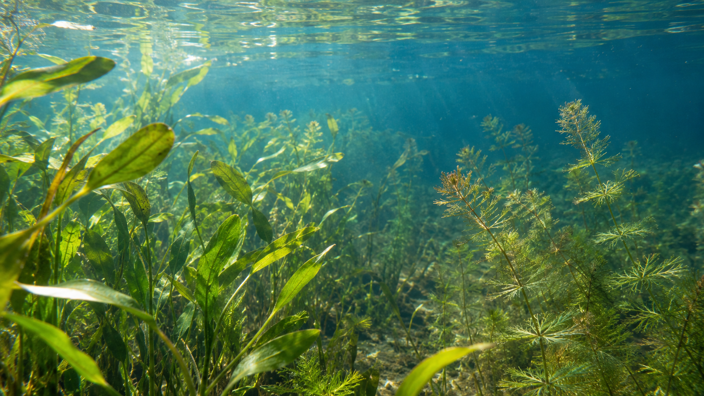
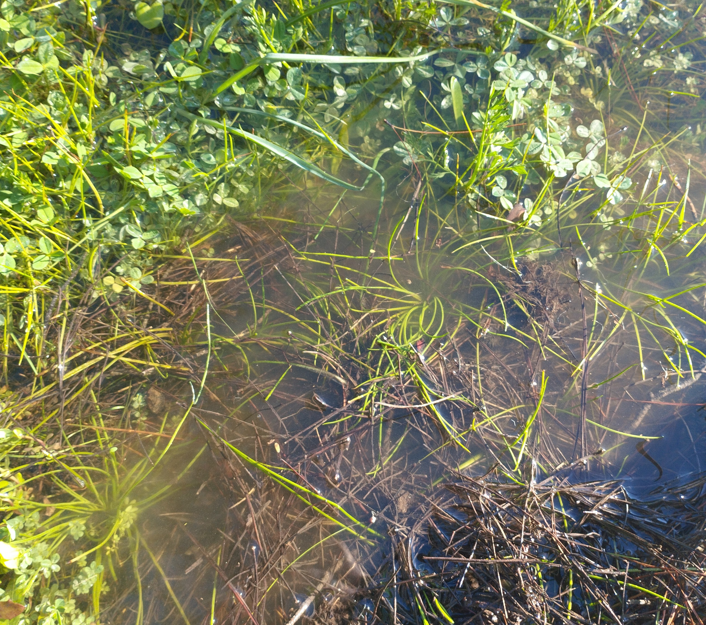

Our ongoing research projects on freshwater biodiversity, ecological monitoring and aquatic plant conservation.

Funding: Hellenic Centre for Marine Research (HCMR)Duration: 2025–2029PI: Eva Papastergiadou

Funding: NECCADuration: 2025–2026PI: Konstantinos Stefanidis